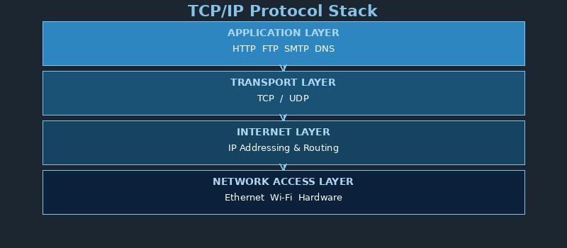

What is TCP/IP?

TCP/IP stands for Transmission Control Protocol/Internet Protocol. It is the fundamental communication protocol suite that powers the Internet.
TCP breaks data into small packets before sending, then reassembles them at the destination. IP handles addressing and routing to ensure packets reach the correct computer.
Key facts:
- TCP ensures reliable delivery of data (checks for lost packets)
- IP handles addressing using IP addresses (like 192.168.1.1)
- Other protocols like HTTP, FTP, and SMTP work on top of TCP/IP
- Vinton Cerf and Bob Kahn developed TCP/IP in the 1970s